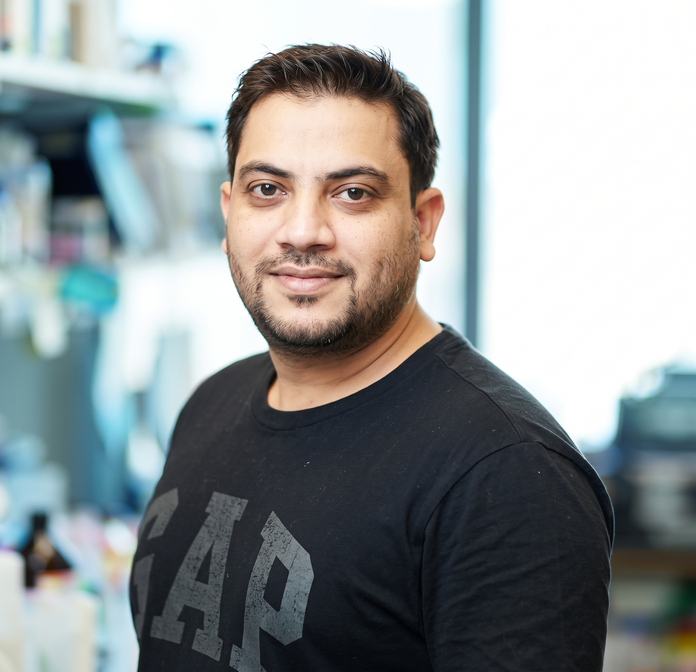

Multi-Omics Integration
Building scalable pipelines that unify transcriptomics, proteomics, metabolomics, and microbiomics into coherent, interpretable biological stories.

Postdoctoral Researcher · Bioinformatics
College of Medicine and Health Sciences, United Arab Emirates University, Al Ain, UAE
Bioinformatician with expertise in multi-omics data integration, systems biology, and precision medicine, seeking to contribute to research initiatives that translate large-scale biological data into therapeutic and diagnostic advances.
Metrics as reported on Google Scholar. Books/book chapters: 1 / 3.
Hover to pause. See the full list →
Over seven years of bioinformatics experience, specialising in multi-omics data analysis across transcriptomics, proteomics, metabolomics, and microbiomics, with expertise in biological networks and systems biology, drug design and development, and personalised medicine.
I am actively seeking an Assistant Professorship with the clear objective of establishing an independent research group focused on multi-omics, computational biology, AI/ML, network-based biomedical research, and collaborative translational research.
Building scalable pipelines that unify transcriptomics, proteomics, metabolomics, and microbiomics into coherent, interpretable biological stories.
Developing and applying machine learning, deep learning, and explainable AI models to uncover biomarkers, drug targets, and patient-stratification signatures.
Leveraging protein–protein interaction and gene-regulatory networks to decode disease mechanisms and identify synthetic-lethal and repurposable drug targets.
Partnering with clinicians, experimental biologists, and industry to translate computational findings into diagnostics and therapeutic strategies.
United Arab Emirates University (UAEU), Al-Ain, UAE
Memorial Sloan Kettering Cancer Center (MSKCC), New York City, USA
Listed in reverse chronological order, 2026 back to 2021. † denotes equal contribution.
| Type of Publication | Number |
|---|---|
| Articles in International Refereed Journals | More than 42 (Google Scholar) |
| Books / Book Chapters | 1 / 3 |
| Number of Citations | More than 770 (Google Scholar) |
| h-index / i10-index | 15 / 21 (Google Scholar) |
Centre for Interdisciplinary Research in Basic Sciences, JMI University, New Delhi, India.
Thesis: Network Meta-Analysis of Human Gene Expression Profiles to Identify Potential Therapeutic Targets for Tuberculosis Infection.
Centre for Interdisciplinary Research in Basic Sciences, JMI University, New Delhi, India.
Jamia Millia Islamia University, New Delhi, India.
Aligarh Muslim University, India.
Life Member, Bioinformatics and Drug Discovery Society (BIDDS17-133), India.
Principal Investigator (PI). Department of Health Research (DHR), Govt. of India. Ref. No. R.12014/06/2019-HR. 04/2019 – 10/2021 (2.5 years).
Indian Council of Medical Research (ICMR), New Delhi, India. Awarded in 2019 for 3 years. Ref. No. ISRM/11(63)/2019.
Moments from our lab. Click a photo to enlarge.
College of Medicine and Health Sciences, United Arab Emirates University, Al Ain, UAE
+917 55 599 6324